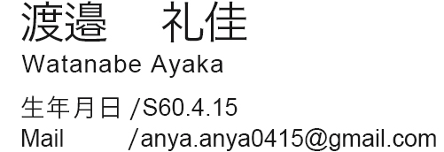

PLOFILE
1985年
秋田県生まれ。幼い頃よりものを作ることが大好きで、東京家政大学では特に好きであったファッション造形について学んだ。
卒業後、株式会社アイランドへ入社。販売、店長、卸売営業を経験。
育児の中、元々好きであったデザインを学ぶためデジタルハリウッド校に入学。Illustrator、Photoshopを学びながら作品をコンペに出品した。
更に知識を深めるべく、株式会社クリエイターズアカデミーグラフィック科でグラフィック、Webデザインを学習した。
SKILL
| Photoshop・・・・・・・・・・・・ | ★★★★☆ |
|---|---|
| Illustrator・・・・・・・・・・・・・ | ★★★★☆ |
| Dreamweaver・・・・・・・・・・・ | ★★★☆☆ |
| Html・・・・・・・・・・・・・・・ | ★★★☆☆ |
| Css・・・・・・・・・・・・・・・・ | ★★★☆☆ |
| javaScript・・・・・・・・・・・・・ | ★☆☆☆☆ |
自己PR
アパレル業界に10年以上従事して参りましたが、デザインで沢山のお客様が笑顔になっていく、デザインのパワーを日々感じておりました。 その経験から、これからは「人を幸せにするデザイン」を創り出していく側に立ち、人を喜ばせたいと考えるようになりました。 その実現のため、Webコンテンツ育成スクールと職業訓練校にてグラフィック、Webデザインを学びました。 これまでに培ってきたコミュニケーション能力、実践力、マネージメント力、分析力と、学習で培ったデザイン力、表現力を今後の仕事につなげ、より多くの人を笑顔にし活躍していきたいです。
"デザインがクライアントとユーザーの橋渡し的存在であること"
"デザインによってあらゆる物の付加価値が上がること"
"情報を分かりやすく正確に伝えられるデザインであること"
以上の事がデザインをする上で重要だと考えます。
実務経験はほぼ未経験ではありますが、一つ一つの仕事に丁寧に且つ誠実に取り組み、実績に繋げていきます。